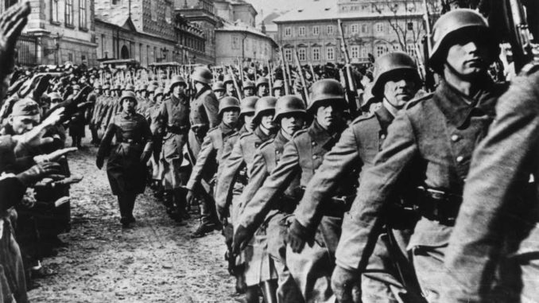
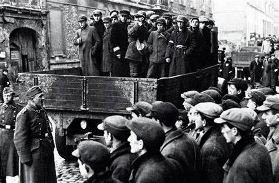

Polonia en la Segunda Guerra Mundial: Una Mirada Profunda a la Resistencia y la Tragedia
La participación de Polonia en la Segunda Guerra Mundial es un capítulo fundamental en la historia del conflicto y en la historia misma del país. Desde el inicio de la guerra en septiembre de
1939 hasta el establecimiento de un régimen comunista después del conflicto, Polonia experimentó una serie de tragedias, heroísmo y lucha por la supervivencia. En este ensayo, exploraremos
en detalle la participación de Polonia en la Segunda Guerra Mundial, desde el contexto histórico hasta las consecuencias a largo plazo.
Contexto Histórico: La Situación de Polonia Antes de la Guerra
Para entender completamente la participación de Polonia en la Segunda Guerra Mundial, es esencial examinar el contexto histórico que precedió al estallido del conflicto. En el período de
entreguerras, Polonia emergió como un país independiente después de más de un siglo de partición y dominación extranjera. Sin embargo, la nación polaca se encontraba en una posición geopolítica
vulnerable, rodeada por potencias expansionistas como la Alemania nazi y la Unión Soviética. El Tratado de Versalles, que puso fin a la Primera Guerra Mundial, otorgó a Polonia territorios
significativos que habían pertenecido a los imperios alemán, austrohúngaro y ruso. A pesar de esto, la situación política y económica de Polonia era frágil, con tensiones étnicas, sociales y
económicas que amenazaban la estabilidad del país.
La Invasión de Polonia y el Estallido de la Guerra
El 1 de septiembre de 1939, las fuerzas armadas alemanas lanzaron una invasión a gran escala de Polonia, marcando el inicio de la Segunda Guerra Mundial en Europa. El ataque alemán fue seguido el 17 de septiembre por la invasión soviética de Polonia desde el este, como parte del pacto Molotov-Ribbentrop entre la Alemania nazi y la Unión Soviética. La invasión alemana fue acompañada por una campaña de terror y violencia dirigida contra la población civil polaca, con ejecuciones masivas, deportaciones y la destrucción de ciudades y aldeas enteras. La resistencia polaca, aunque valiente y tenaz, fue abrumada por la superioridad militar alemana y soviética, y Polonia capituló en menos de un mes.

La Ocupación y la Resistencia Polaca
La ocupación alemana y soviética de Polonia durante la Segunda Guerra Mundial fue brutal y despiadada. Los nazis establecieron un régimen de terror en el territorio polaco, implementando políticas de represión, persecución y exterminio dirigidas contra los judíos, los polacos étnicos y otros grupos considerados "indeseables" por el régimen nazi. La resistencia polaca, sin embargo, no se detuvo. A pesar de la ocupación y la represión, los polacos continuaron luchando por su libertad y su dignidad. La resistencia tomó muchas formas, desde actos individuales de desafío hasta la organización de grupos clandestinos y la participación en la resistencia armada contra los ocupantes alemanes y soviéticos.
El Levantamiento del Gueto de Varsovia y la Revuelta de Varsovia
Uno de los episodios más destacados de la resistencia polaca durante la Segunda Guerra Mundial fue el Levantamiento del Gueto de Varsovia en 1943. Ante la inminente deportación y exterminio de los judíos en el gueto de Varsovia, los residentes judíos se levantaron en armas contra los nazis, en una valiente pero desigual lucha por la supervivencia y la dignidad. La Revuelta de Varsovia en 1944 fue otro acto heroico de resistencia polaca contra la ocupación nazi. Después de años de opresión y brutalidad, los polacos se levantaron en armas contra los ocupantes alemanes, en un intento desesperado por liberar su ciudad y su país. A pesar de la valentía y la determinación de los combatientes polacos, la revuelta fue sofocada brutalmente por los nazis, y Varsovia fue casi completamente destruida en represalia.

El Exilio y el Legado de la Guerra
Después de la Segunda Guerra Mundial, Polonia emergió como un país devastado por la guerra y dividido por las influencias geopolíticas de la Unión Soviética y Occidente. El país había sufrido enormes pérdidas humanas y materiales, con millones de muertos y vastas áreas destruidas por la guerra. Además, la población judía de Polonia había sido casi completamente exterminada en el Holocausto nazi. El establecimiento de un régimen comunista en Polonia después de la guerra llevó a décadas de represión política, censura y control estatal. Sin embargo, la memoria de la resistencia polaca durante la Segunda Guerra Mundial nunca fue olvidada. El heroísmo y la determinación de los polacos en la lucha contra la ocupación nazi y soviética siguen siendo una fuente de orgullo y inspiración para el país y el mundo.
Conclusiones
La participación de Polonia en la Segunda Guerra Mundial fue un capítulo oscuro y doloroso en la historia del país, marcado por la tragedia, el sufrimiento y la lucha por la libertad. La invasión y ocupación de Polonia por parte de Alemania y la Unión Soviética fueron eventos catastróficos que dejaron una profunda huella en la nación polaca y en la memoria colectiva del mundo. A pesar de las adversidades y la brutalidad de la guerra, los polacos nunca renunciaron a su lucha por la libertad y la dignidad. La resistencia polaca, en todas sus formas, fue un testimonio del espíritu humano y la capacidad de resistencia en tiempos de crisis. A través del estudio y la reflexión sobre este período oscuro de la historia, podemos honrar el sacrificio y el heroísmo de los que lucharon y murieron por la libertad y la justicia.